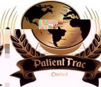

PatientTrac Limited UK company · patienttracltd.com AegisIQ Limited aegisiqgroup.comOverview
H. Wayne Hayes Jr leads the PatientTrac Clinical Intelligence Network — a cloud-native suite of clinical applications spanning documentation, intake, engagement, and specialty care workflows — at patienttrac.com.
Separately, he provides leadership with PatientTrac Limited (UK) and with AegisIQ Limited, with an international base in Bogotá, Colombia.
Focus
- Healthcare technology and clinical intelligence platforms (PatientTrac)
- PatientTrac Limited corporate leadership
- AegisIQ Limited group and related technology initiatives
- Corporate strategy, governance, and cross-border structure